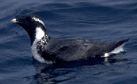
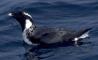

| Ancient Murrelet | |
|---|---|
|  | |
| Conservation status | |
| Binomial name | |
| Synthliboramphus antiquus (Gmelin, 1789) |
| Ancient Murrelet | |
|---|---|
|  | |
| Conservation status | |
| Binomial name | |
| Synthliboramphus antiquus (Gmelin, 1789) |
The Ancient Murrelet, Synthliboramphus antiquus, is a bird in the auk family. It breeds from the Yellow Sea (islands off China), through the Russian Pacific coast and the Aleutian Islands to the Haida Gwaii archipelago of British Columbia, where about half of the world population breeds.
These birds breed in colonies, their two eggs (sometimes one) are laid in burrows excavated in forest soil among tree roots, under logs or in grass tussocks, occasionally in rock crevices. These small auks arrive at and depart from their nesting grounds at night, presumably to reduce predation, and perhaps for the same reason the young are never fed at the nest, being taken to sea 1-3 days after hatching. The parents and young recognise one another by call and after the chicks have run from the burrow to the sea, they locate their parents by call and the entire family swims immediately out at sea. The family continues to move away from land for at least twelve hours. After that, the young are fed exclusively at sea by their parents for more than a month.
Some Ancient Murrelets move south in winter as far as California, and odd birds are found inland in North America, carried by autumn storms. The most remarkable record of this relatively short-distance Pacific migrant was a bird found on Lundy, Devon in spring 1990. Even more remarkably, the same bird returned to this British island the following spring.
This small auk species is black on the head, throat and rear neck, grey-backed, and has white underparts. The yellow bill is short and stubby. It has a small rounded black tail. The summer adults have white head streaks giving an aged look and leading to the English name. Other plumages are similar, but lack the crown streaks and black on the throat.
Ancient Murrelets tend to bank from side to side in flight to a greater extent than other small auks. They fly with fast wing beats due to their short wings. Like other auks, Ancient Murrelets forage by swimming underwater using their wings for propulsion. Their diet is poorly known. In winter it consists mainly of crustacea, while in summer both small fish, and crustaceans are taken. Based on stable isotope analysis, their diet in Haida Gwaii seems to consist primarily of small mesopelagic fish. [1]
The Ancient Murrelet is listed as of 'Special Concern' by the Committee on the Status of Endangered Wildlife in Canada because populations have been greatly reduced over the past century by mammalian predators introduced to their breeding islands. Some recent restoration work is helping to reverse this trend.

{kind=link}